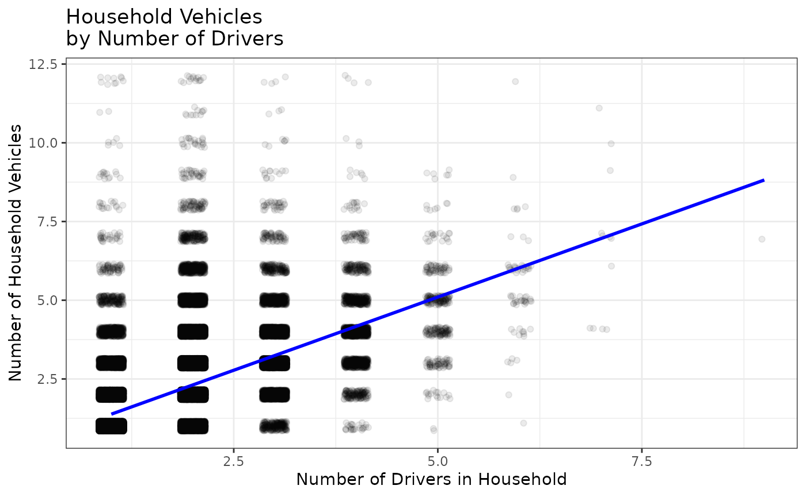

Exploratory Data Analysis Example
This example uses the house dataset to explore whether
households with more drivers tend to have more vehicles.
#> Filtered to households with at least one driver
house_with_drivers <- house |>
filter(number_drivers > 0)
#> Summary statistics of vehicles by number of drivers
house_with_drivers |>
group_by(number_drivers) |>
summarize(
households = n(),
mean_vehicles = mean(number_vehicles),
median_vehicles = median(number_vehicles),
sd_vehicles = sd(number_vehicles)
)
#> # A tibble: 8 × 5
#> number_drivers households mean_vehicles median_vehicles sd_vehicles
#> <dbl> <int> <dbl> <dbl> <dbl>
#> 1 1 47652 1.30 1 0.772
#> 2 2 65404 2.34 2 0.966
#> 3 3 9156 3.21 3 1.11
#> 4 4 2274 3.99 4 1.25
#> 5 5 384 4.62 5 1.42
#> 6 6 69 5.39 5 1.60
#> 7 7 12 6.67 7 2.42
#> 8 9 1 7 7 NA
#> Filtered to households with at least one vehicle
house_with_vehicles <- house_with_drivers |>
filter(number_vehicles > 0)
#> Plot household vehicles by number of drivers
ggplot(data = house_with_vehicles,
aes(x = number_drivers,
y = number_vehicles)) +
geom_jitter(alpha = 0.08, width = 0.15, height = 0.15) +
geom_smooth(method = lm, se = FALSE, formula = y ~ x, color = "blue") +
labs(title = "Household Vehicles \nby Number of Drivers",
x = "Number of Drivers in Household",
y = "Number of Household Vehicles") +
theme_bw()
#> Fit a simple linear regression model
vehicles_drivers_model <- lm(number_vehicles ~ number_drivers,
data = house_with_vehicles)
summary(vehicles_drivers_model)
#>
#> Call:
#> lm(formula = number_vehicles ~ number_drivers, data = house_with_vehicles)
#>
#> Residuals:
#> Min 1Q Median 3Q Max
#> -5.0296 -0.3816 -0.3112 0.6184 10.6184
#>
#> Coefficients:
#> Estimate Std. Error t value Pr(>|t|)
#> (Intercept) 0.452039 0.006892 65.59 <2e-16 ***
#> number_drivers 0.929588 0.003653 254.44 <2e-16 ***
#> ---
#> Signif. codes: 0 '***' 0.001 '**' 0.01 '*' 0.05 '.' 0.1 ' ' 1
#>
#> Residual standard error: 0.905 on 122996 degrees of freedom
#> Multiple R-squared: 0.3448, Adjusted R-squared: 0.3448
#> F-statistic: 6.474e+04 on 1 and 122996 DF, p-value: < 2.2e-16
#> Correlation between number of drivers and number of vehicles
cor(house_with_vehicles$number_drivers, house_with_vehicles$number_vehicles)
#> [1] 0.5872373
#> The slope estimates the average change in household vehicles for one
#> additional driver in the household.
coef(vehicles_drivers_model)["number_drivers"]
#> number_drivers
#> 0.9295881